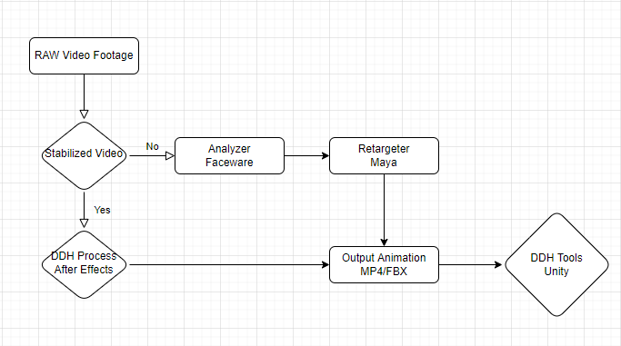
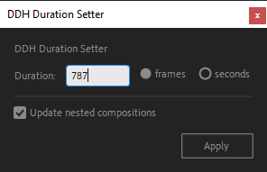
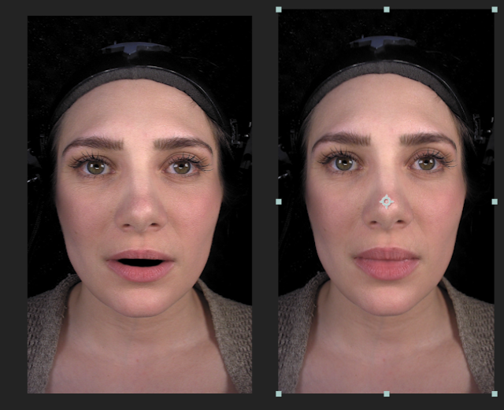
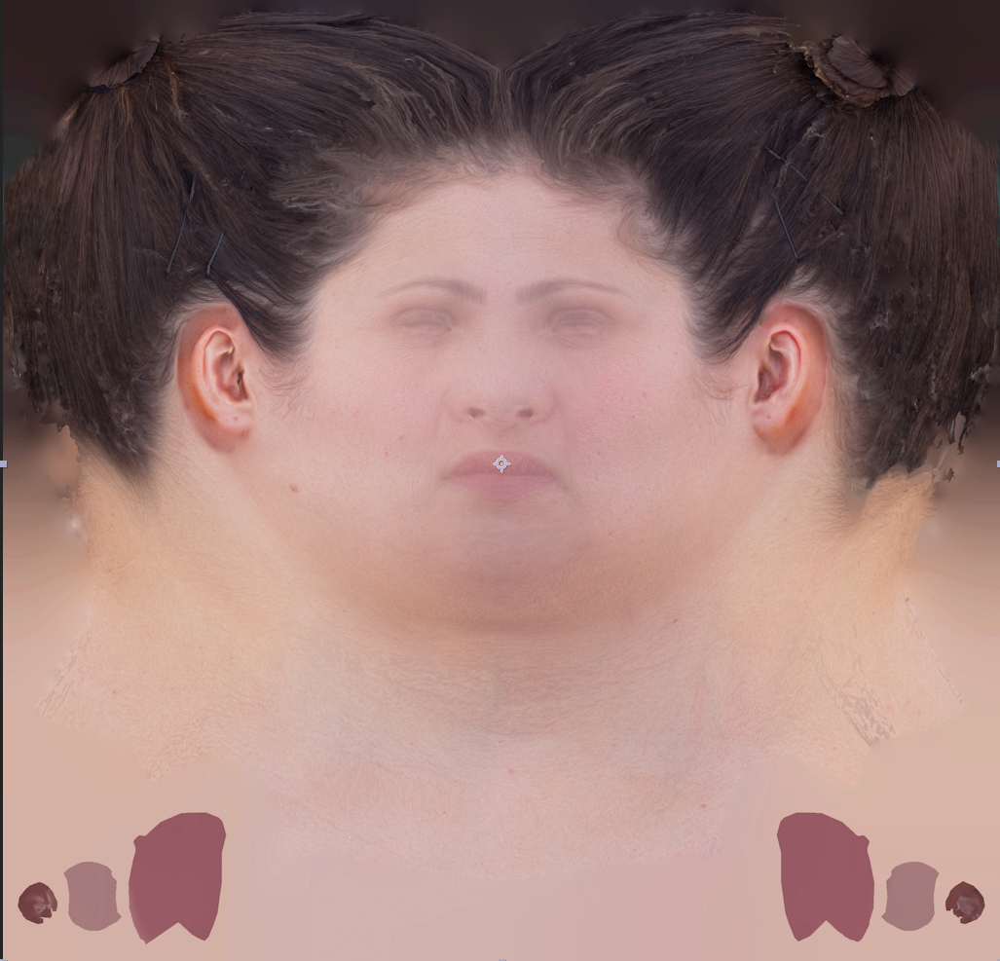
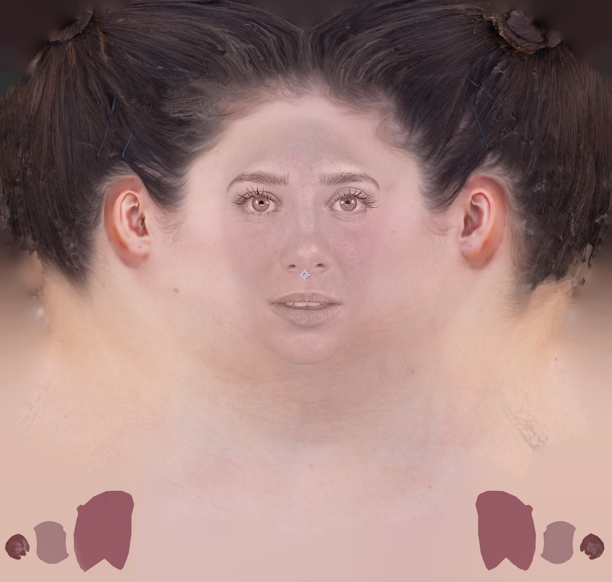

Dynamic Digital Humans Documentation
Image Processing
This process creates the facial projection using an After Effects Template for Maya to animate with. It also creates the textures that combine the projection and UV together to create the final UV video atlas that will be used in game engines.
1.1 Shooting and conforming video footage
1. Import head-mounted camera (HMC) video footage
i. Import your HMC footage into any video editing software (Premiere, Final Cut Pro, etc.)
2. Select and export your clips
i. Select the shots you would like to keep. This is where the editorial choices are made by a client, if applicable.
ii. Review the selection and make sure that the footage is clean, in focus, and that each shot starts and ends with a neutral pose.
iii. Export the selected clips with the following settings:
- Include Range of Motion (ROM)
- Trim all footage to desired length for performances
- Format: 1080p (full frame, at max resolution)
- Codec: H265, Prores 422 or uncompressed
- Final edited framerate: 24 (looks more cinematic and is faster to process and animate)
- Grade footage to maintain stable lighting and color balance
NOTE
- Apply same grade for entire facial capture production to ensure colors and conformed properly throughout (use color chart)
- Link to Reference shooting best practices
1.2 Pipeline Production Outline
This outline describes the optimal way to work with a production team to analyze, stabilize, retarget and animate characters efficiently. By using this workflow you can use unstabilized videos in your workflow and stabilize during creation.
1.3 Install required software and tools
The various software and tools required are listed below. Download the following to install the complete pipeline.
- Maya 2020
- Faceware Pro - For production settings (shared poses)
- Adobe Photoshop and After Effects
- Unity 2020
- Unreal 4.27 (not tested in Unreal 5 yet)
- DDH Image Processor Plugin (2021.08.19)
Install DDH Image Processor Plugin
1. In the downloaded folder, find the tile install_admin.bat, right click on it and run as administrator
2. Follow the instructions in the installer window
3. When the installer succeeds, it will have installed several Maya scripts and an After Effects plugin.
Download Maya Character Template Project
The following is a character file to test the DDH image processor in Maya
- Character File (Maya template)
- Laura Character (Maya character)
Download Faceware Analyzer (standalone)
- Analyze edited footage, paying extra attention to the inside of the mouth
- Export xml of landmark positions
- ADD LINK- Faceware Analyzer Documentation
- Laura Droids Analyzer Exmaple
- Export facial landmarks burnt into image sequence
1.4 After Effects Template Project
RESOURCES
Project Settings (setup for new users)
1. Download DDH Image Processor Project and follow the walkthrough video
2. Open After Effects
3. In the project settings, change time and display to frames and disable the use of feet and frames
4. Establish frame length
i. Import new video into the Projects/Media folder
ii. Select the imported video in the project bin and set the frame length to the new imported clip length
iii. Select all the compositions in the Workflow folder under your Project menu
5. Navigate to File/Scripts, where the scripts should be loaded, and select DDH_Duration_Setter.jsx
1.5 Tracking and Stabilizing Footage
It is required to re-stabilize landmark video footage for action performances where the camera moves from the original captured position. We can observe that camera footage isn't perfect because eyes and teeth (upper jaw) move around from the original position.
This is partly due to motion distortion from the rig being attached through compression to the head and second due to parallax distance between the top of the head and bottom of the head. We use the After Effects template to stabilize the video, by locking the camera position to the eyes in frame.
- Copy stabilization track to mouth cutout
- Use mouth cutout .xml file of face landmarks using SIRTPlugins/FaceTracker
TRY
Use original uncompressed video as it will have better features and more detail to track see image A. (Left side = compressed image vs Right side = uncompressed image)
1. In the Menu bar, select File->Import->File. Import the original camera footage that is stored on the device.
2. Drag the footage file into the Composition area. Select the new source footage and ALT+drag the video into the composition area to replace the sequence.
3. In the Menu bar, select Window->Tracker. This opens the menu needed to track and stabilize the footage.

4. Select the video in the composition area and select Stabilize Motion in the Tracker menu. The box that appears with a + target in the middle is the motion tracker, named Track Point 1. When selected and moved around, the tracker magnifies the area of the footage it is over.
5. Drag Track Point 1 to the inner corner of an ege. Choose a point for it to rest on - this is the point that will remain consistent for the stabilization. Drag the edit points of Track Point 1's rectables into tall, thin rectangles.
6. Click the Play button next to Analyze in the Tracker menu. As the video plays, Tracker point 1 will move away from its original position (first image below). Eliminate this movement by pressing the Stop button in the Tracker menu and dragging the point back to its original position (second image below). Press Play and repeat this process with other points that fall out of place (third image below).
7. Once the end of the video has been reached, click Apply in the Tracker menu. In the Motion Tracker window, select the option X and Y in the Apply Dimensions drop down menu, and press OK.
8. Now that the footage has been stabilized, play through the footage and take note of any large shifts and jumps in the footage that remain. These remaining shifts and jumps can be eliminated in two steps:
i. In the timeline, delete unnecessary anchor points between two anchor positions (first image below), by highlighting them and pressing the delete key. Determine which frames shift too much by pressing the Take Snapshot button in the viewport (second image below) on a frame you would like to reference, then press the Show Snapshot button (third image below) on a different frame to compare the position of your motion tracker. Delete unnecessary anchor points between two frames that are in the same or a very similar position.

ii. In the timeline, to eliminate minor drifting between the remaining anchor points, add a position key (image below) on a frame you would like to reference and press the Take Snapshot button. On a different frame, use the Show Snapshot button and arrow keys on your keyboard to move the footage until it matches the referenced frame. Repeat as needed for the length of the footage.
9. Once this is complete, the footage is stabilized and ready to be used in the Image Processing Workflow.
10. Use the registration lines to rotate/straighten and position the actor in the center of the screen, with the eye line horizontal in frame.
1.6 Copy Stabilize To Mouth
Using the DDH Face Tracker plugin in After Effects:
1. Make sure the composition duration, framerate and resolution are the same as the Faceware .xml file
2. Select the layer and add the DDH Plugin - FaceTracker effect
3. Click the Browse button in the effect and select a Faceware .xml file
4. Go to the first frame in the sequence
5. While the layer is selected:
i. Select a face feature
ii. Click the Create Mask button
- The plugin will create a smooth mask around the selected feature
iii. Select the corner vertices and convert them with the Convert Vertex Tool
iv. Click the Track Mask button
- The plugin will create all key frames (Mask Example)
v. If keyframes do not match the composition size, select mask path and scale all keys uniformly to the size of the composition (ALT+Left Click)
6. Make sure layer 3is enabled and covers the mouth area. It fills in missing screen information for the mouth mask layer
NOTE
Create a reference frame if preserve RGB is turned on.
1.7 Mouth Mask
Creates automated mask for rendering the content aware fill
1. Using UV_Snapshot (UV_FacePostion), adjust Layer 3 (copyStabilize to mouth) to match head position
2. Transfer size and placement from Render_MouthMask composition to match video composition
i. Line up eyes and chin location to get rough size and placement
ii. Enable the pink mask
iii. Hide the UV position layer and expose black and white mask to crop the mouth
1.8 Mouth Content Aware Fill
Create an edge layer to correct texture error from the head projection
1. Hide Fill Layer (layer 1)
2. Select Layer 2 and go to the Content Aware Fill window
- Fill method: Object, with moderate lighting correction
- Range: Work Area
- Generate fill layer
3. Change fill layer (layer 1) to lighten
1.9 Render Head Projection
Create an animation reference layer for retargeting inside Maya. Blend UV and animation together for seamless projection and reprojection on characters. This compositing workflow was established for DDH to easily transfer similarly graded footage to create a texture blending that is repeatable between the UV and projection textures. The workflow can be adopted to suit your compositing needs and can be accomplished with alternative compositing structures.
1. Paint out eyes and mouth details in Photoshop (layer 8)
- If character has facial hair, pay special attention to the blend line on the face
2. Add detial to the image using bump or detail extract mode in Photoshop
3. Refine mask to fit the character's profile in layer 6
4. Adjust shadow highlights and Lumetri color to blend out shadows and highlights
- Start with auto amount
5. Adjust refine hard matte
- Shift edge to appropriate edge
- Adjust decontamination (extend where smoothed) settings to smooth edges
6. Use painted face layer to over and neutralize color on the image in layer 5
7. Using painted face, blend edges by using Darken and Lighten color modes on layers 3 and 4
8. Add color back into the eyes and lips using masks and original layers on top of the footage, in layers 1 and 2
9. Render head projection
i. Add to render queue
ii. Select lossless and change format to TIFF sequence
iii. Select output and render to:
sourceimages/Takes/TakeName/TakeName_HeadProjection.[####].tifiv. Save in subfolder using the naming convention TakeName_HeadProjection
Known Limitations
1. Don't use an underscore in between numbering of files, maya reads frames with a .####. nomenclature eg. (Droids_HeadProjection.0001.tif)*
2. Ensure that your After Effects project has a properly set up colour space
2.0 Render Mouth Fill
Cleans up edge errors between teeth and lips, and hides the nostrils behind the nose geometry when rendering combnined DDH Image in Maya
1. Replace Content Aware Fill with a new fill layer
2. Copy and paste Lumetri color to the layer to match color discrepancies
3. Copy and paste refine soft matte to soften the edges
- Adjust parameters to suit new texture
4. Use Liquify Warp to tighten nostrils and move nose inward
5. Render mouth fill
i. Add to render queue
ii. Select Lossless and change the format to TIFF sequence
iii. Select output and render to sourceimages/Takes/TakeName/TakeName_HeadMouthFill.[####].tif
iv. Save in subfolder using the naming convention TakeName_HeadMouthFill